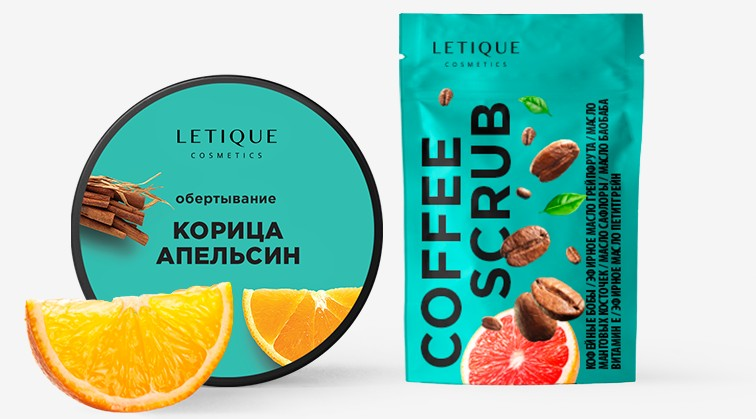

ГОРЯЧИЙ АНТИЦЕЛЛЮЛИТНЫЙ КОМПЛЕКС C КОФЕ
Описание
Горячий комплекс для избавления от эффекта апельсиновой корки. Активно ускоряет циркуляцию крови, нагревает поверхность кожи, способствуя выведению шлаков и токсинов из организма. Эфирные масла в составе комплекса глубоко проникают в кожу, восстанавливая ее эластичность и стимулируя процесс регенерации.
250 г + 200 мл
10800 тг
Эффекты
Горячий антицеллюлитный комплекс расширяет сосуды, активизирует кровообращение, снимает отеки. Через раскрытые поры происходит двойной обмен – микроэлементы, витамины, активные вещества и минералы глубоко проникают в кожу, а на поверхность, через раскрытые поры выделяются шлаки и токсины.
Стимулирует процесс липолиза, рассасывания и расщепления плотных фиброзных тяжей при целлюлите, а так же нормализует обмен веществ. Эффект тепла создается благодаря усилению кровообращения. Борется с целлюлитом, восстанавливает упругость и рельеф кожи, очищает организм на клеточном уровне, насыщает витаминами и минералами. Противопоказан при варикозном расширении вен.
Применение
СКРАБ:
Нанесите скраб на увлажненное тело, желательно после ванны или душа, когда кожа слегка распарена. Помассируйте зону нанесения круговыми движениями, уделяя особое внимание проблемным местам. После этого смойте остатки скраба теплой водой и промокните кожу полотенцем.
ОБЕРТЫВАНИЕ:
Нанесите обертывание на очищенную влажную кожу, желательно после применения скраба, на проблемные участки тела равномерным густым слоем и оберните пищевой пленкой плотно, но не туго и подождите 30-50 минут. После этого снимите остатки обертывания сухой салфеткой и осторожно смойте прохладной водой.